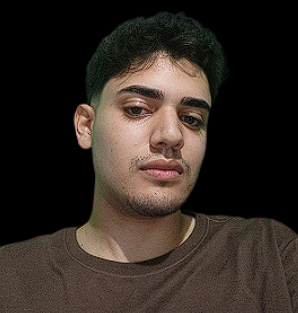

Biografia:
Adson Siqueira Rosa é estudante de Ciência da Computação na UVV e iniciou seu interesse por tecnologia após cursar eletrotécnica, onde teve contato com computação. Busca se tornar um profissional versátil nas áreas de desenvolvimento web e elétrica, ampliando suas oportunidades no mercado. Possui habilidades na criação de páginas web, conhecimentos básicos a intermediários em música (bateria) e fundamentos em elétrica. Em sua vida pessoal, gosta de jogar futebol, tocar bateria e possui gosto musical variado (rock, pop, forró), além de ser torcedor do Flamengo.
Sua trajetória acadêmica inclui o CEJAC (infantil), SESI (fundamental), BG (ensino médio) e atualmente a UVV, onde cursa disciplinas como Construção de Software para Web, Experiência e Interface com o Usuário, Fundamentos de Tecnologia da Computação, Lógica para Computação e Textos Científicos. Participou da MOBFOG e da Olimpíada Canguru, conquistando medalhas. Pretende atuar em computação ou elétrica, iniciando com um estágio para conciliar prática e estudos, visando crescimento profissional e novas oportunidades.
